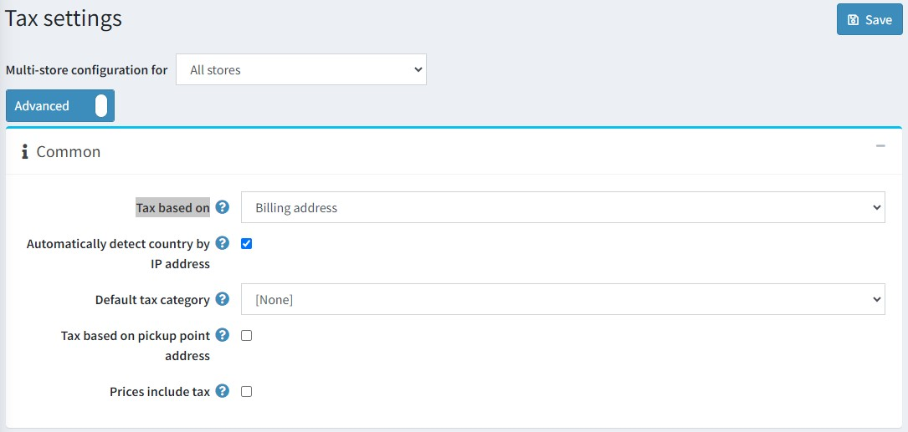

稅務設定
本節說明您商店的稅務設定，例如定義價格是否包含稅額、定義稅額顯示類型等。
若要管理您的稅務設定，請前往 設定 → 設定 → 稅務設定。

首先，請定義一般稅務設定：
- 在 稅額計算依據 (Tax based on) 下拉式選單中，選擇計算稅額的依據，如下所示：
- 帳單地址 (Billing address)：選擇此選項時，稅額將根據顧客的帳單地址計算。如果帳單地址未知，則使用預設地址（於下方輸入）。
- 配送地址 (Shipping address)：選擇此選項時，稅額將根據顧客的配送地址計算。如果配送地址未知，則使用預設地址（於下方輸入）。
- 預設地址 (Default address)：選擇此選項時，稅額將根據下方輸入的預設地址計算。
- 依據 IP 位址自動偵測國家/地區 (Automatically detect country by IP address)：啟用此設定後，若顧客尚未設定帳單/配送地址，系統將會透過地理位置服務（依據 IP 位址）自動判斷稅額計算所使用的國家/地區。
- 選擇商品的 預設稅務類別 (Default tax category)。此類別將會預先選定於 新增商品 頁面中。
- 依據取貨點地址計算稅額 (Tax based on pickup point address) 核取方塊用於定義當選擇取貨點時，是否應使用取貨點地址來計算稅額。
- 勾選 價格包含稅額 (Prices include tax) 核取方塊，以標示輸入的價格是否已包含稅額。
接著，請定義 預設稅務地址（用於稅額計算），如下所示：
- 選擇 國家/地區 (Country)。
- 選擇 州/省 (State/province)。
- 定義 縣市/地區 (County/region)。
- 定義 城市 (City)。
- 定義 地址 1 (Address 1)。
- 輸入 郵遞區號 (Zip/postal code)。
在 稅額顯示 (Tax displaying) 面板中，您可以設定顧客看到的稅額顯示方式：
- 勾選 允許顧客選擇稅額顯示類型 (Allow customers to select tax display type) 核取方塊，以允許顧客選擇稅額顯示類型。若未勾選，則會顯示 稅額顯示類型 (Tax display type) 下拉式選單：
- 未稅 (Excluding tax)：選擇此項以強制執行未稅顯示。
- 含稅 (Including tax)：選擇此項以強制執行含稅顯示。
- 勾選 顯示稅額後綴 (Display tax suffix) 核取方塊，以顯示稅額後綴（含稅/未稅）。
- 勾選 顯示所有已套用的稅率 (Display all applied tax rates) 核取方塊，以在購物車頁面中的單獨行顯示所有已套用的稅率。
- 勾選 隱藏零稅額 (Hide zero tax) 核取方塊，以在訂單摘要中隱藏零稅額數值。
- 勾選 在訂單摘要中隱藏稅額 (Hide tax in order summary) 核取方塊，以便在價格顯示為含稅時，隱藏訂單摘要中的稅額數值。
- 勾選 強制從訂單小計中排除稅額 (Force tax exclusion from order subtotal) 核取方塊，以始終從訂單小計中排除稅額（與所選的稅額顯示類型無關）。此核取方塊僅影響顯示訂單總計的頁面。
在 配送 (Shipping) 面板中，勾選 配送應課稅 (Shipping is taxable) 核取方塊，以標示配送費用應課稅。接著會顯示下列欄位：
- 配送價格包含稅額 (Shipping price includes tax)：勾選以標示配送價格已包含稅額。
- 配送稅務類別 (Shipping tax category)：選擇用於計算配送稅額所需的稅務類別。
在 付款 (Payment) 面板中，勾選 付款方式附加費應課稅 (Payment method additional fee is taxable) 核取方塊，以標示付款方式的附加費用應課稅。將會顯示下列選項：
- 付款方式附加費包含稅額 (Payment method additional fee includes tax)：勾選以標示付款方式的附加費用已包含稅額。
- 付款方式附加費稅務類別 (Payment method additional fee tax category)：從下拉式選單中，選擇用於計算付款方式附加費稅額所需的稅務類別。
接著，在 VAT 面板中設定增值稅 (VAT)：
- 勾選 啟用歐盟增值稅 (EU VAT enabled) 核取方塊，以標示已啟用歐盟增值稅。選擇此選項後，顧客在註冊時或於顧客帳戶詳細資料頁面中，將會被要求填寫 公司增值稅號 (Company VAT number)。如果勾選了 使用網路服務 (Use web service) 核取方塊，此增值稅號可透過網路服務自動驗證，或由商店管理員在後台的顧客詳細資料頁面手動驗證。
- 對訪客啟用歐盟增值稅 (EU VAT enabled for guests) - 勾選此項可對訪客顧客啟用歐盟增值稅。他們將需要在結帳流程的帳單地址步驟中輸入增值稅號。
- 需要增值稅號 (VAT number required) - 若需要「歐盟增值稅號」則勾選。
- 您的商店所在國家 (Your shop country)：從下拉式選單中，選擇您的商店所在國家。
- 允許免除增值稅 (Allow VAT exemption)：勾選此核取方塊，可對符合資格且已註冊增值稅的顧客免除增值稅。
- 假設增值稅始終有效 (Assume VAT always valid)：勾選此核取方塊可跳過增值稅驗證。輸入的增值稅號將始終視為有效。顧客有責任提供最新的增值稅號。
- 使用網路服務 (Use web service)：勾選此核取方塊以使用網路服務驗證增值稅號。
- 當提交新的增值稅號時通知管理員 (Notify admin when a new VAT number is submitted)：勾選此核取方塊，以便在提交新的增值稅號時透過電子郵件接收通知。
Note
若啟用 VAT，則針對歐盟以外地區的運送收取 0% 稅率；對於已提供經過驗證並核准的 VAT 號碼，且運送目的地為歐盟境內但商店所屬國家以外的顧客，亦收取 0% 稅率。關於歐盟 VAT 的進一步資訊，請參考相關文章。
Tip
閱讀如何設定歐盟 VAT：歐盟 VAT 設定指南。
點擊 儲存 (Save)。